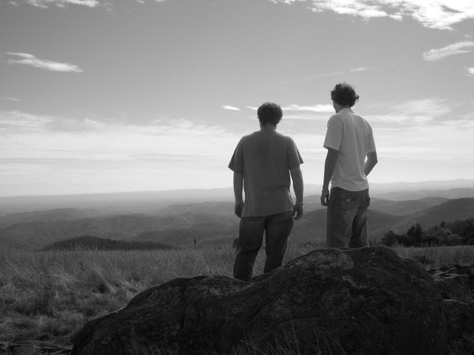

Philosophy
People live in this world to change it. The generous citizens of the world help the needy, give comfort to the downtrodden, and offer aid to the mistreated. We offer their stories as a testament to the kindness that flourishes in this world. We believe that with hard work, flexibility, and a little luck, you can change someone's life.
Mission Statement
It is our duty to highlight and promote the good deeds of the people we meet. We travel around the country to film and document volunteers as they fulfill their desires to help others. We will highlight any type of aid, whether it be shelter to the homeless, advice to the afflicted, or peace to the troubled. Their stories will be shared through our visions and travels.
Maxwell and Richard Brooke

Maxwell and Richard Brooke are the twins sons of Carole and Thomas Brooke. Hailing from China Grove, North Carolina and members of Mt. Zion UCC in the same town, they are the producers, workers, and adventurers of the website Twin Maps.
Maxwell Brooke graduated from East Carolina University with a Bachelors of Science in Communications with a focus in Broadcasting and Journalism. At ECU, he was the Vice President of the National Broadcasting Society and wrote, produced, and directed for Seriously Clowning, a sketch comedy group.
Richard Brooke graduated with Honors from the University of North Carolina at Chapel Hill with Bachelors of Arts degrees in Political Science and Religious Studies and a Minor in Social and Economic Justice. At UNC, he was the Chief Marshal for the Senior Class of 2010 and Co-Chairman of Carolina Fever, a student fan group.
The United Church of Christ is a mainline Protestant denomination whose central offices are based in Cleveland, Ohio. The UCC is the producer of this project and endeavor. More information about the UCC can be accessed at UCC.org.
Support volunteer expenses for the Brooke Brothers’ Blogging Tour (UCC Volunteer Ministries, WCM). Your gift supports a food stipend, health insurance and program expenses for these UCC Partners in Service volunteers. Contributions beyond these expenses support Partners in Service volunteers in other settings throughout the United States.